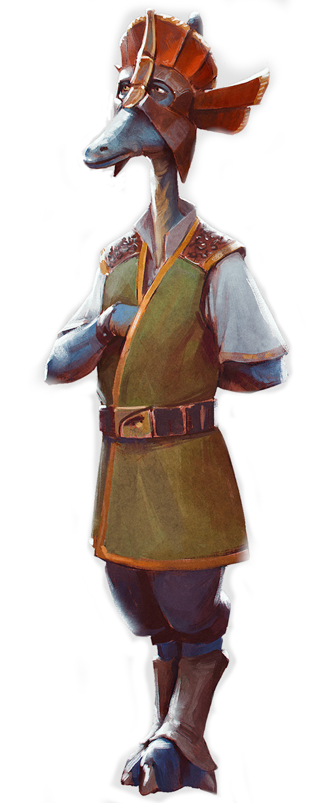

Bardottan
Special Abilities: Bardottans begin the game with one rank in Knowledge (Lore). They still may not train Knowledge (Lore) above rank 2 during character creation.
Bardottans are characteristically intelligent and deeply spiritual, and many demonstrate high levels of physical skill as well. They are often scholars, devoting their lives to the intense study of a specific field. Many travel the galaxy in pursuit of their research. Academic Bardottans typically only continue a journey after they have uncovered all information in their current location that is relevant to their research. As they study, Bardottans tend to meditate as a key component of the learning process. Often, these meditations include reflections upon history, family, and their cultural interpretation of the Force.
Bardottans are a saurian species, with scaled skin. Their lower legs bend backward, and they walk on three-toed feet. Their forearms are shorter than their lower extremities and end in three fingers and a thumb. Their long necks are heavily wrinkled and can bend in any direction. A beak-like snout dominates their head. Bardottans vary substantially in height at maturity, ranging from just over a meter to more than two meters tall. Their skin tones range from pale gray to yellow, green, and even purple. Some have a consistent tone across their bodies, but others have distinctive markings, including striped and spotted patterns.
Bardottan culture traditionally values knowledge and education very highly, and cultivates an intense devotion to spiritual matters. Bardottan scholars tend toward a high degree of secrecy with the information that they uncover in the course of their research, only sharing details with outsiders when it becomes absolutely necessary. They are proud and independent beings who are reluctant to ask for assistance. Instead, they prefer to resolve issues internally whenever possible. They expect outside intervention only when situations become particularly dire.
Bardottans deliberately isolate their society into groups within different academic and religious fields. Because they consider all information precious, earning the right to information is a part of their educational and professional process. They become quite loyal to their immediate peers, but they are reluctant to work with those outside of their group.
Bardotta is the homeworld of the Bardottan people. The planet’s government is a monarchy, though the king or queen is assisted by a contingent of Dagoyan Master advisors. Bardotta has isolationist tendencies. Almost all of the planet’s inhabitants are members of the native species.
After their exposure to the larger galaxy millennia ago, Bardottans colonized other worlds, including Phu. Cultural norms on some colonies vary substantially from the culture native to Bardotta; for instance, Bardottans from other worlds are not always as secretive or isolationist as those from the species’ homeworld.
All Bardottans are fluent in Basic and many also study the traditional Bardottan language. Those who explore other cultures often master other languages as part of their studies.
The Bardottans have a strong cultural Force tradition, whose skilled practitioners are known as the Dagoyan Masters. This tradition links the Force to the idea of living in harmony with the galaxy. The Dagoyan Masters use the Force as a tool for education and understanding, sometimes integrating its use into negotiations. They are nonviolent, believing that the Force should never be used to injure another living being.
Bardotta is also home to the hidden Frangawl cult. This order embraces the dark side of the Force in the worship of an ancient demon named Malmourral. The Frangawl cult willingly employed violence in their traditions, even going so far as to extract the Living Force from their victims so that they could sacrifice it as part of their rituals.
Bardottans are opposed to the Jedi tradition of taking younglings to Jedi Temples for training. The Dagoyan Masters believe that any Force-sensitive members of their species should join the Bardottan tradition. This led to a conflict of interest with the Jedi, in which the Bardottan government labeled them as kidnappers.
The Bardottans are a proud species. While they hold themselves and others to a very high standard, they are uncomfortable admitting to those times when they have failed to live up to that standard. Bardottans recognize that their culture has gone through growing pains, as most do. However, they have tried to conceal these mistakes from the greater galaxy rather than using them as an example from which others could learn.
The Frangawl cult is a tragic example. In their shame, the Bardottans have tried to ignore the cult’s existence, even as cultists have kidnapped and sacrificed important citizens. Because of the Bardottans’ degree of sophistication, these incidents have been rare, but they remain deplorable.